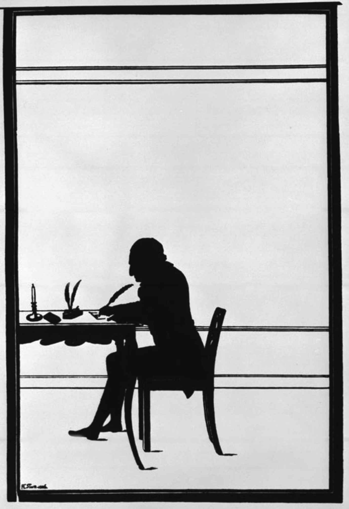
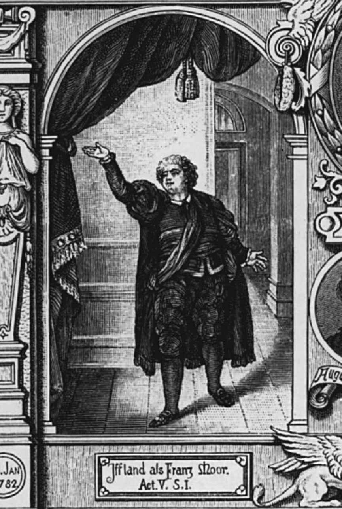

众所周知，18世纪是启蒙的世纪。但（至少）存在两场启蒙运动，因为1700年之前，有两个不同的区域有兴趣批判欧洲封建制度的残余。其一是资产阶级的启蒙运动，为英格兰和苏格兰特有，但也在法国获得了一些支持，它批判不动产的占有者，首先是教会，然后是贵族，打着个体自由的旗号，为的是让资本自由流通。资产阶级启蒙运动（以洛克、曼德维尔和牛顿等人为代表）的哲学倾向于经验主义，认为感官的证据优于理性的推测，最终又倾向于唯物主义。另一次是一场官方、官僚或君主的启蒙运动，它批判封建制度的遗留，无论是教会和贵族，还是行会和帝国自由城市，以集体秩序的名义贯彻唯一的中央行政意志。以笛卡尔和莱布尼茨及其有影响力的弟子克里斯蒂安·奥古斯特·沃尔夫（1679—1754）为代表的官僚主义启蒙通常与哲学的理性主义相联系，倾向于认为理性原则能超越个人感官的不可靠证据，它奉法国为文化权威，因为法国已成为欧洲最强大的中央集权君主国。国家官员的理性主义启蒙在18世纪的德国是特别有影响力的，因为地方君主试图加强控制，巩固领土，统一管理。一个单一、透明的体系将要统治社会和思想，沃尔夫学生们的体系从万物的基本原理出发，提供了从上帝存在到咖啡馆重要性的合理论证，在世纪中叶实质性地垄断了大学哲学教席的任命。开明君主的国际语言法语是德国宫廷的语言：贵族用法语交谈和通信，读法语书，在宫廷剧院常常观看法语戏剧。相比之下，直到18世纪中期，英语还没有国际地位，英格兰和苏格兰资产阶级的经验主义启蒙运动在德国哲学中几乎没有什么追随者，它的影响力更多地体现在自然科学和后来的历史研究中（特别是在哥廷根大学，它是英国国王乔治二世为了使他的选侯国汉诺威的德国臣民获益，于1737年新创建的）。
英国文学在北部港口城市汉堡和不来梅影响最大，这些城市也因此成为半脱离于帝国其他地区的独立存在。在这里留存下来的真正的资产阶级文化促生了1720年《鲁滨逊漂流记》的第一个德译本，以及英国中产阶级启蒙最重要的传播媒介（例如艾迪生的《旁观者》等刊物）的第一批德国翻版：各种“道德周刊”。快乐的感官欲望和对物质世界的价值的信心在地方文学中盛行一时，在商人弗里德里希·冯·哈格多恩（1708—1754）幽默的爱情诗或城市之父巴托尔德·欣里希·布罗克斯（1680—1747）对花朵、昆虫和其他自然现象的诸多沉思里随处可见。但是，要将这种本质上是舶来品的经验主义与封建德国知识分子正统观念中的、系统化的理性主义相结合却是相当困难的。沃尔夫主义确信，在上帝的规划中一切皆有目的。当布罗克斯细致入微的实证观察与沃尔夫主义相冲突时，一个不自觉（或许起到缓和作用）的滑稽元素进入他的诗句，例如他推论把羚羊的角制作成拐杖的手柄就使羚羊达到了终极完美。德国文学的未来不得不萌生在比汉堡略接近内地的某地，那里将更直接地感受和遭遇到来自开明专制国家的挑战—比如莱比锡。莱比锡是萨克森选侯国最大的城市，也是某种博览会的发源地，该博览会与法兰克福的博览会一道，自16世纪以来一直是德国出版业的一大支柱，但莱比锡既不是自由城市，也不是政府的中心。（选帝侯与他的宫廷在德累斯顿，距此70英里。）它的大多数市民和汉堡人一样已经资产阶级化了，但他们并没有管理自己的事务。然而，莱比锡还在另一个关键方面与帝国自由城市不同：它有一所大学。在这里，德国中产阶级最活跃的一些成员与新教专制主义最鲜明的文化制度并存。18世纪的20至50年代，莱比锡是一场大运动的中心，这场运动使德语文学成为中产阶级文化自我表达的首选方式，无论是从商还是从政的中产阶级都在接受王侯权威统治的前提下统一起来。该运动有意识地模仿了奥皮茨的运动，但它不是被在大人物的内阁中寻求诗歌听众的外交官和统治者的亲信操纵，而是被（无薪的）诗歌教授和（带薪的）逻辑学教授掌控。约翰·克里斯托夫·戈特舍德（1700—1766）写了两卷本的莱布尼茨—沃尔夫哲学概论，他依据这种哲学的精神，试图在他的文论《写给德国人的批判诗学试论》（1730）中展示，文学如何能够并且应该基于几条简单、理性的原则被系统地应用起来，以便让资产阶级和受过大学教育的公务员们欣赏到同样的作品。由同时代的笛福、菲尔丁和理查森发展起来的新文学类型—小说，在英国中产阶级里大规模流行，并被翻译到亲英派的德国市场（汉堡和哥廷根），戈特舍德却置之不理，而是把精力集中在戏剧上。与小说不同的是，戏剧有着良好的经典和学术谱系，在宫廷文化中扮演了核心角色，至今仍然是为大众提供娱乐的一种方式。戈特舍德把戏剧作为专制主义德国的统治者与被统治者之间文化交流的渠道。他坚持使用德语，与巡回演出剧团建立个人联系，并与妻子协力为它们编写、收集和翻译模式化的戏剧。但是他也要求戏剧必须有合理的结构，奉行路易十四时代法国戏剧的统一性和条条框框，因此可以想象得到，在德国宫廷剧院上演的戏剧要么是拉辛的悲剧，要么是意大利的歌剧。戈特舍德创建的一套强大的思想体系，在他自己对该体系的应用都变得可笑之后很久，还继续主导着文学界的讨论。然而小说，更确切地说是满足人们对小说的需求的、蓬勃发展中的图书市场不容忽视，于是比起他在戏剧写作和演出方面的所有规划，他在戏剧和戏剧集的出版上耗力更多，好让它们以书的形式被阅读。
18世纪的德国文学不是源于对英国经验主义启蒙运动作品的模仿，也不是源于戈特舍德以莱布尼茨—沃尔夫和法国为导向的理性主义，而是从两者的冲突之中产生的，这场冲突反映了德国中产阶级的两翼（官僚和资产阶级）的利益分歧，并随着该世纪的进程而加剧。对戈特舍德提出直接反对的人集中在两个自治共和主义地区：北部的不来梅和南部的瑞士。在那里，反对君主制的弥尔顿的诗歌因其对超自然事物的丰富描写而被誉为理性主义的反面典范。然而，戈特舍德和弥尔顿之间创造性的折中是由莱比锡的杰出神学学生弗里德里希·戈特利布·克洛卜施托克（1724—1803）做出的。1748年，克洛卜施托克出版了《弥赛亚》的前三章，这是一部自诩为弥尔顿式的史诗，主题却是使弥尔顿遭受过挫败的：基督的救赎行动。长诗用六步格写就，这是荷马和维吉尔常用的韵律，此前很少用在德语中。克洛卜施托克继续把希腊语和拉丁语的诗节形式改编进他的“颂歌”，这些关于爱情、友谊、自然、道德和爱国主题的较短的诗歌—以及他痴迷的滑冰运动带来的乐趣—比他的史诗更好地展现出他真正革命性的特点：文学的严肃性和自主性的新概念。他投入了印刷和出版文字的商业媒体，而非戈特舍德的针对戏剧的半宫廷媒体，但是他声称自己所写的与（为他的形式创新奠定学术基础的）国立大学机构和（为他的《弥赛亚》提供主题、为其他诗歌提供神学语言的）教会拥有同等的权威。然而，在克洛卜施托克的颂歌里，频繁乞求上帝和永生的目的不是为了探索宗教的神秘，而是为了强调他的经历和感受独一无二的意义，因为那些是属于他的，也因为—正如那奇特而不朽的形式告诉我们的—他是一位诗人。这位焦虑的、略微有些困惑的自然学者在诗中报告了他对布罗克斯诗中秩序的追寻，此时他被一种意识所取代，意识本身就是在风景、雷雨、夏夜中所发现的意义的源头。《弥赛亚》第一章出版之际，当出现了一位赞助人愿意应允他破格的要求时，未来道路的轮廓就显现了。丹麦国王给予克洛卜施托克一份津贴，使他得以完成这部长诗，他放弃了神学研究，成为德国第一位全职诗人。
如果说诗歌已成为克洛卜施托克的宗教，那么希腊艺术就成了另一位前神学家约翰·约阿希姆·温克尔曼（1717—1768）的宗教，他彻底逃离了只给他提供一份教书和辅导的苦差事的德国，来到罗马全身心投入了对古代艺术的研究。在《关于模仿希腊绘画和雕塑作品的思考》（1755）中，他指出我们在古希腊艺术中发现的身体和道德的美来源于古希腊社会和宗教的优势；通过模仿它们的艺术，我们有希望再现那些古老的完美。正如他的名言，最好的古代作品所拥有的“高贵的单纯和静穆的伟大”可以渗透进我们的艺术和生活，然后顺理成章地影响我们的社会和宗教。他对某些作品，特别是《观景殿的阿波罗》欣喜若狂的描述运用了虔信主义者的热情语言，暗示通过他自己的感觉和言词，古代神灵的精神已经再次觉醒，在现代世界中变得活跃起来。诗歌和视觉艺术还没有被理解为同一人类活动的分支，即我们现在所称的“艺术”，但是一旦它们二者开始被视为获得神启的世俗渠道，向着普遍美学理论进发的第一步就已经迈出了。［“美学”这个术语本身是在1750年进入学术圈的，它是沃尔夫的普鲁士信徒亚历山大·戈特利布·鲍姆加滕（1714—1762）的发明。］
然而18世纪中叶，在德国中产阶级中，与王权统治密切相关的制度化宗教最广泛的替代品既非诗歌也非视觉艺术，而是对个人感情的浓厚兴趣。先于社会身份的内心圣地（虔信主义者所称的灵魂和莱布尼茨派所称的单子），被赋予了一种拥有情感力量的世俗形式，在这里至少个人可以感觉到命运由自己主宰。男人和女人同样在劳伦斯·斯特恩的《感伤之旅》（1768）中发现了自己，因此德译本几乎立刻为他们的眼泪文化提供了名字：“感伤主义”。
这些人的导师是克里斯托弗·马丁·维兰德（1733—1813），尽管并非所有维兰德的读者都意识到了他精练的唯物论暗中破坏他们内心堡垒的安全性已到了何种程度。维兰德也是牧师的儿子，早年受到宗教怀疑的困扰，在翻译莎士比亚后，他终于找到了自己的文学专长：以一个虚构世界为背景的小说或浪漫故事，故事通常发生在一个有章可循的、阳光普照的古典时期，由一个精明而喜爱讽刺的叙述者讲述其中发生的一段有趣的情节、微妙的心理和挑逗的情欲。这是与菲尔丁的方式的一种妥协，完美应合了德国的环境。任何对当代现实的直接表现都不伴随风险，某种现实主义照样得以实现。在小说（尤其是《阿伽通》，1767年首版）、精湛的诗歌叙事（例如《穆萨里昂》，1768）和信件中，维兰德非常精巧地分析了人类情感对思想、道德、哲学和政治态度的影响。他处在遍及德国的信函网络的中心，写信人互相交流由他们平静生活中的偶发事件或正在阅读的（无论是宗教的还是越来越多非宗教的）书籍触发的思想和感受，以及关于感受的思想。他以一种迷惑性的安逸假象在思想上达到感觉和理性的平衡，在写作中达到舶来物和本土传统的平衡，甚至在个人事务方面，他还在官场和私人企业之间取得了平衡。1769年，他被任命为埃尔福特大学的哲学教授，三年后，他接受附近萨克森—魏玛公国的摄政公爵夫人安娜·阿玛利亚的邀请，成为她即将成年的儿子卡尔·奥古斯特的导师。维兰德领着公爵夫人的薪水，定居在魏玛，但他并没有失去独立性。1773年他开始创办一份文学报纸《德意志信使》 [10] ，让他的通信网络直接见报。该报成为德国南部最成功的报刊，虽然他最终从全职编辑岗位退休，该刊仍然给他漫长而多产的余生提供了额外收入。

图5 18世纪作家的典型形象，写字桌前的维兰德，1806年
1763年，似乎以新教利益的胜利告终的七年战争在德国开启了一个更加动荡不安的文化转型阶段。战后，英语文化的声望大大提高，这意味着更容易获得自由思想和个人主义的启蒙，加深了知识分子和专制德国社会和政治结构之间的摩擦。例如牧师的儿子戈特霍尔德·埃夫莱姆·莱辛（1729—1781）在莱比锡学习神学，但是在英国自然神论和戈特舍德最喜欢的巡回剧团的综合影响下，放弃牧师职业，选择了自由文学家不安定的生活。他从十几岁就开始写剧本，1755年凭借《萨拉·萨姆逊小姐》首次取得巨大成功，它实际上是一份英国风格的宣言。这是第一部德国的或“资产阶级的”悲剧（市民悲剧），塑造了优柔寡断的诱惑者、品德高尚的牺牲者和悲伤的父亲，成为把理查森式的多卷本情感小说搬上舞台的一次令人难以置信的尝试。在这个意义上，它印证了戈特舍德的观点：戏剧，而不是小说，将成为德国中产阶级文学自我表达的手段。然而1759年，莱辛发起了德语语言中最有效的一次暗杀行动，在他出版的唯一一期期刊中反驳了戈特舍德的“改革”，用莎士比亚来取代戈特舍德的法国模式，指点德国作家寻找关于浮士德博士的可靠的当地素材（他认为浮士德是一位追求真理的启蒙者，自然不能被判处永恒的惩罚）。战争结束不久，莱辛就写了一部喜剧，这部喜剧证实了他对反映当代生活的现实主义文学的投入和对腓特烈大王执政的厌恶，腓特烈大王的征战把西里西亚带给了普鲁士，却摧毁了德累斯顿、莱比锡和萨克森的经济：《明娜·冯·巴恩赫姆》（1767年出版）是自出版以来就一直在剧团的保留剧目中占有一席之地的最早的一部德国戏剧，尽管它暗含的讽刺意味并不总能受到赞赏。莱辛似乎发出了18世纪60年代德国文学中最激进的声音，确实，他正在帮助人们重新定义什么是文学。作为一个前神学家，他努力在私人生活中为自己找到一个合适的位置，并反对国家或教会的威权主义，他代表了从理性主义向经验主义、从法国模式到英国模式的转变背后所有的社会利益。但是他清楚自己脆弱的立场。1766年，他出版了一本理论专著《拉奥孔》，其本意是区分文学与绘画，但也暗示了两者之间最初的可比性，为以下观点做了铺垫：它们归根结底只是同一种，即很快被冠以“艺术”之名的人类活动的变体。文学是自给自足的一种力量，还是和视觉艺术之类一样，是宫廷生活的装饰？莱辛在这一问题上的模棱两可反映出他对自己脆弱的社会地位的察觉。他还认识到，在德国，文学大概无法将自己定位为在经济和政治上独立的文化权威。接下来的三年，他作为家庭剧作家做了汉堡资产阶级注定会失败的一次尝试：建立自己的“民族剧院”。在剧院倒闭后，他承认，他只有妥协才可以过上能够使他结婚和定居的体面生活。1770年，他进入王室服务，担任沃尔芬比特尔的不伦瑞克公爵的图书管理员。他的最后一部悲剧《爱米丽雅·迦洛蒂》（1772）是对他早年生活的痛苦告别，讲述了一个关于专制权力的腐败影响的故事，影响的不仅是行使权力的亲王，还有他的中产阶级的受害者，后者只有用道德和身体的自我毁灭来做出抵抗。
格奥尔格·克里斯托弗·利希滕贝格（1742—1799）对英格兰的失望却给他带来了文学上的伟大成就，这是他的职业生涯中的意外。他是德国最著名的自然科学家，哥廷根的物理学教授，高斯的老师，也对知识界的各种当代蠢事极尽调侃和讽刺。他和乔治三世有私交，曾两次拜访被他称为“神佑之岛”的英国，对英国的科学、工业、文学和政治制度赞不绝口。他穷尽一生用英国人的方式为一部幽默小说搜集资料，而他的文学遗嘱执行人所发现的东西，比任何一部完成了的菲尔丁或斯特恩的模仿之作都好得多：在摘录簿中，他日复一日地记录下思想、片段、反思、措辞，这是最早、最多样也是最私人化的德国人的格言集，英国人在这种形式上也不可能做得更好：
要是德国也能拥有自由活跃的中产阶级就好了！外向开放、自信现实、恰到好处地独特，必要的时候有一点古怪，与文学，特别是小说相配！18世纪六七十年代的文学风暴受这种渴望的驱动，以一部不起眼的剧作的标题家喻户晓：狂飙突进。该运动的理论家约翰·戈特弗里德·赫尔德（1744—1803）来自如今归属波兰的东普鲁士，一生都在与世俗化和专制主义的统治力量做斗争。尽管在18世纪70年代初期，信仰遭遇严重危机，他仍拒绝屈服于自然神论批判的权威，保持着牧师的身份。他虽然是一名国家官员，却对君主保持着来自中产阶级的敌意。他设想了一个融合美学、神学和迅速扩大领域的文化人类学（他是第一批努力的组织者之一）的综合体，但这个设想从未完全实现：他的确深信，人类生活的物质环境，他们的技能、语言、信仰、艺术实践、文学实践构成了一个唯一的、自给自足且独具特色的整体，有助于形成“文化”的现代观念。这是莱布尼茨的单子论在历史学上的应用。他认为，个人也拥有独特的性格，拥有一种“原始天才”，它尤其是通过语言的媒介可以成为人类共同的财富。文学，无论是神圣的还是世俗的，都是个人天才和集体天才交织的产物。莎士比亚是一位“戏剧之神”，是诸多领域的缔造者，但他不能脱离英国文化，它塑造了他，然后他又帮助它继续塑造。由此可见，德国不能仅仅通过模仿英国或法国的模式来获得像英国或法国那样的民族文学：德国必须识别和利用自己的资源，利用它中世纪的历史，利用它流行的娱乐和民歌。1770至1771年的冬天，赫尔德在斯特拉斯堡大学遇见了他认为能胜任这项任务的人：约翰·沃尔夫冈·冯·歌德（1749—1832）。
歌德在18世纪的德国作家中是出类拔萃的，这指的不仅仅是他的能力：至少作为一个年轻人，他无须为了钱而写作，甚至根本没必要工作。他是一个真正的资产阶级成员，是帝国自由城市法兰克福上层资产阶级的成员。他的母亲是市政府顾问的女儿，他的父亲靠自己的资产生活。歌德学习法律—先是在莱比锡（他在那里结识了戈特舍德），然后在斯特拉斯堡。他的学习更多的是为了让自己有事可干，而不是为了提升。他没有迫使他的同时代人与政治领袖达成创作妥协的焦虑，有可能他最终会迷失于文学。然而赫尔德向他展示了他所体现的中世纪晚期和近代德国城市的传统如何能适应当前的文学，以及如何能通过他再次进入主流。歌德回到法兰克福向朋友们宣告他转向了莎士比亚，六周之内完成了一部散文体历史剧的初稿。与以前的任何德语作品不同，它有59次场景的变换，以16世纪初的强盗男爵葛兹·冯·贝利欣根的回忆录为基础，还有献给马丁·路德的小片段。歌德对16世纪越来越感兴趣，当时德国的城市文化在欧洲影响重大。他研究汉斯·萨克斯，模仿他的诗句，并和莱辛一样开始设想把浮士德博士的故事重新写成戏剧。多亏了赫尔德，歌德在斯特拉斯堡的收获基本上是语言学方面的：发现既有的教育、文化和政治机构之外的普通人语言中的文学潜能。《葛兹·冯·贝利欣根》（1773年出版）最精彩场景中的语言胜过了当时法语和英语文学中的语言，或许罗伯特·彭斯作品中的语言除外。有几位朋友分享了他的经验和灵感，尤其是雅各布·米夏埃尔·莱茵霍尔德·伦茨（1751—1792）和海因里希·莱奥波德·瓦格纳（1747—1779），他们是狂飙突进运动的创作核心，尽管其他人更加喧哗。
歌德的伟大在于他有能力汇集当时知识分子生活的方方面面（并且他有如此做的自由）。18世纪70年代至80年代早期，大量抒情诗从他笔下喷薄而出，其中许多源于瞬间的灵感，有些多年没有发表，几乎所有的诗作在形式上都是独一无二的：叙事谣曲、民歌的仿作、记录变幻情感的有韵断片、篇幅完整的颂歌、神秘主义的赞美诗，以及一些与其说是对生活、上帝、爱和自然的冥想，不如说是对它们的无法归类的诗性回应，另有一些仅仅在信件或日记的上下文中半隐半现。有些属于他最著名的作品，特别是因为它们吸引了几代作曲家。他在斯特拉斯堡新获得了与德语口语和德国流行传统的亲密关系，对莎士比亚象征性运用的自然意象做出了直觉反应，从克洛卜施托克身上学到了活跃的诗意意识中的自信，还有对虔信主义和感伤主义的自我审视的实践秉持的开放态度。以上的产物就是歌德的诗歌。歌德通过感伤主义者的网络寻求和培养友谊，他自己的通信迅速成为这一网络的重要部分。直觉似乎告诉他，比起任何试图建立独立的中产阶级文化的努力，维兰德的妥协之路在德国有更好的未来，狂飙突进运动把歌德奉为德国文学的成长点，甚至“弥赛亚”，歌德却越来越清楚地意识到运动中潜在的悲剧性。《葛兹·冯·贝利欣根》是一出模棱两可的戏剧，不只因为主人公的铁手既是力量又是柔弱的象征。它讲了两个故事，一个故事讲的是葛兹，他为了阻止历史进程，捍卫神圣罗马帝国的旧自由而耗费了一生；另一个故事讲的是他的老朋友魏斯林根，他把自己的命运与君主专制主义的上升力量绑在了一起。但是一个爱上自己笔下主题的诗人讲故事的魔力掩盖了这两种人生规划都将走向死胡同的事实：葛兹的警示作用逐渐退去，魏斯林根死于自己的内部阵营。《葛兹·冯·贝利欣根》是想象文学中第一批有意识的“历史”作品之一，是它的译者沃尔特·司各特的一个重要模板。只是它的政治冲突和个人命运的主题属于歌德自己的时代和世代，在他的下一部主要作品中，他成功地将这些主题融入对当代生活的现实描写中，不再以一部事实上无法演出的戏剧这一折中形式，而是出色地以现代形式—小说—表现出来。
《少年维特的烦恼》（1774）使歌德闻名欧洲，尽管小说的悲剧情节依赖于德国特殊的环境（并且基于一个真实的事件）。
这是一篇书信体小说，但由于所有的信都来自维特，对收信人未置一词，看起来像是写给读者的。读者被邀请进入围绕维特的记者圈，维特自己也被视为其中一员。直到今天，这篇小说仍然强烈吸引读者进入维特过于活跃的情感的醉人逻辑中：他面对自然世界时情绪起伏；他对绿蒂一片痴恋，绿蒂却已和另一个男人订婚，然后结婚；他精神崩溃，此时出现一个“编者”搜集他在开枪自杀前最后时日的证据。使此书貌似过时的因素实际上正是让它永久保持现代性的原因：书中所含的“自然”概念，表现的不仅是自发的感觉，而且是通过文化（书籍和流行事物）为人物同时也为读者定制的。它的现实主义是社会的现实主义，即便在关乎心灵时也是如此。维特穿着英国乡村绅士的衣服和靴子，以表明他的个人操守和不依附宫廷或大学的独立性。他和绿蒂知道自己是彼此的灵魂伴侣，因为面对一场雷雨，他俩不约而同地想起克洛卜施托克的同一首颂歌。因此，维特的故事不单是病理学上的个体自我毁灭的故事。像爱米丽雅·迦洛蒂那样（维特死时，莱辛的剧本正打开放在他的身旁），维特被社会和政治胁迫逼向死亡。在与绿蒂的“恋爱”进行到半途时，他曾试图通过承担国家公务员的工作来摆脱自己的情感。然而，他有足够的钱—他是一个真正的资产阶级成员，经济上没有必要去维持一份工作，执政贵族在他身上看到了上升中的知识分子新阶层，竭力排挤他，他很快感觉到格格不入，只好回到了对绿蒂的痴迷中。以一种不随时间推移而褪色的特殊叙述方式，《少年维特的烦恼》讲述了在敌对的经济和政治形势下，资产阶级企图在英国模式的基础上建立自己的文化信念而最终遭遇的失败。但小说也表现了失败的危险后果：反叛之外的唯一选择，即感伤主义可能会失控，感觉可能从任何外部现实甚至从生活中脱离出来。
维特毁灭的只是他自己。但是围绕在歌德身边、不久后被称为“天才”的那些人的反抗也可以让他人付出代价。在写作《少年维特的烦恼》的同时，歌德又想起了16世纪，只是他起草中的浮士德传奇远非《葛兹·冯·贝利欣根》这样的历史剧。他设想了一部“崭新的”《浮士德》，借助少许的历史虚饰可以更容易将一些无法避免的超自然因素引入本质上现代的情节。最开始的三场表明浮士德是一个术士，以某种难以解释的方式获得了恶魔同伴梅菲斯托，除了这三场，歌德毕生之作的初稿—通常被称为《原浮士德》—应用了18世纪的诱惑叙事（很大程度上归功于理查森），甚少借鉴原作故事书和戏剧。浮士德与一名城镇女孩玛格丽特（“格蕾琴”是深情的昵称）的私情故事在传统上没有任何依据，除非像歌德一度计划的那样，把她当作这个现代浮士德的现代海伦。尽管如此，歌德的戏剧与当时其他的诱惑故事，例如《萨拉·萨姆逊小姐》大相径庭。不同之处首先在于诱惑者的性格和动机。最初的几场不能与余下的情节割裂：浮士德不是花花公子，他与格蕾琴的恋爱是他在开场独白中所表达的激情冲动的表现，为的是放下纯思想的理性世界，用他全部的感官去拥抱完整的人类命运。他对大学—君主制德国的社会背景在剧中唯一的痕迹—不感兴趣，而是在城镇生活中寻找现实，先是在小酒馆，后来在辛苦工作却知足常乐的、信奉天主教的居民们的小世界里。折磨着他这个自由思想家，或许还是个（前）新教徒的诸多欲望，似乎并未打扰那些居民们。然而他的不安也引起了他们更深层需求的共鸣：因为格蕾琴能在浮士德身上辨识出某种未知的但并非虚幻的承诺，她可以回应他的渴望，而浮士德对她的渴望起初只是感官上的，但后来变成了爱。用以描写她相对卑微的生活背景（陈设简陋的房间、朴实的言辞、邻居们的闲话）的饱含同情的现实主义，在同时代的文学中是很罕见的（戈德史密斯或许能算一个）；她怀孕时的绝望、与家人的隔阂、杀婴、疯狂、终究害怕的死亡判决，这样强烈的悲剧则是独一无二的。对她的不幸幸灾乐祸的恶毒的梅菲斯托将她的悲剧延伸到浮士德身上。她的结局似乎也是她爱人的结局，这个现代浮士德的反抗似乎一样在引领他下地狱，他甚至被他所爱上的世界抛弃。但是简言之，这个简单故事的意义被扩大和更新了，因为歌德投入了他当时写作诗歌的所有资源。每一个简洁、独立、几乎没有关联的场景都有自己的氛围，大多数场景都有自己的时间。浮士德专断而明确地表达出对现实的迫切渴望，他的心灵感受渗入了戏剧的内在结构。各个场景围绕强大的视觉主题建立—浮士德的魔法书、格蕾琴梳头的场景或给圣母献花的场景。通过浮士德的幻象和格蕾琴令人难忘的歌唱的丰富画面语言和多变节奏，以及通过她最后散文体的长篇大论的可怕合理性，强大的视觉主题得以加强。一个讲述文化失败的苦涩故事被歌德的诗歌转变成一出关于爱情和背叛、野心和罪行的真正悲剧。
伦茨和瓦格纳都写过杀婴的母亲这一主题，也和歌德一样喜爱流行话语，尽管无力像歌德那样将之变成诗。不过伦茨仍然取得了显著的成就：他的戏剧《家庭教师》（1774）和《士兵们》（1776）实质上都是关于当代德国的小说。戏剧的结构被分解成由小段情节和快照式场景组成的万花筒，但戏剧的形式被用来制造出了非凡的客观性。伦茨肆无忌惮地解除了与感伤主义和单子论传统的任何妥协：他笔下的人物没有内在的生命，而是表现为运作中的社会机制，通过语言互相操纵。他们可能显得怪诞，但仍然有能力受苦，伦茨和歌德一样察觉到了他们所处社会中的潜在悲剧。戏剧《家庭教师》中的家庭教师罗费尔是一个典型的失业的前神学家（伦茨自己也是其中之一），从这个阶层中产生了德国文学和狂飙突进运动。然而罗费尔不是浮士德。他爱上了他负责照管的人，陷入不可逃脱的欲望和同样不可逃脱的压迫中，他放弃斗争，阉割了自己。失败的反抗是很多狂飙突进作品的主题，这是一个历史的现实，尽管没有别人像伦茨那样直接而痛苦地展现它的真实特征。伦茨自己败给了精神疾病，而他的大多数作家伙伴们移居国外，或以其他方式沉默下去。
尽管歌德也考虑过移居瑞士，但他并没有放弃。1775年他确实移居了，但还在德国境内。他中断了关于16世纪荷兰反抗西班牙专制统治的戏剧《埃格蒙特》的写作，仿效维兰德，应18岁的卡尔·奥古斯特公爵之邀移居魏玛。在他的建议下，不久之后，赫尔德被召来做了公爵领地路德教会的精神领袖。歌德搬离资产阶级的法兰克福意味着对现实、对君主制德国的特权的接受。他搬迁的同时，狂飙突进运动也发展到顶峰，并开始了它的转变。无论如何，在1776年，自本世纪中叶起兴起的英国崇拜结束了。一旦英国与它的美洲殖民地发生战争，它就不再能被简单地标榜为自由之地。对于那些感觉被本国环境压迫着的人来说，不再存在一个清楚明白的外部模式，也不再存在城镇文化和王国文化之间或经验主义和理性主义的启蒙运动之间的轻易选择。德国必须找到自己的方式去解决内部矛盾。1776年，两部高度紧张的戏剧—弗里德里希·马克西米利安·克林格尔（1752—1831）的《双胞胎》和约翰·安东·莱泽维茨（1752—1806）更加细致入微的《尤利乌斯·冯·塔伦特》—通过相同的戏剧主题，表现了这个新的或新近变得严重的困境：兄弟之间的致命冲突。在同一时间，斯图加特一名叛逆的男学生弗里德里希·席勒（1759—1805）开始起草这个主题的终极版本：他的第一部戏剧《强盗》，1781年出版时在读者群中掀起了热潮，并在第二年首演时让观众们如痴如醉，啜泣不止。
如同德国中产阶级的两翼资产阶级和官僚，席勒笔下的两兄弟面对分裂他们的因素时是团结一致的：他们都是几乎一直处在濒死状态的父亲莫尔伯爵所代表的旧制度的潜在接班人。卡尔是合法的继承人，他道德高尚，但在大学期间被弟弟弗兰茨欺骗，走向叛乱。弗兰茨是一个物质主义者、决定论者和自诩的无神论者，他表现出卑微的态度，却计划着不仅要排挤他的哥哥，还要杀死自己的父亲。然而，卡尔作为强盗团伙的领袖，他犯下的罪行比弗兰茨更多、更真实。当伯爵最终死亡时，兄弟俩的责任是同等的。但是两人都没有得到继承权，因为他们都采取了自杀行动—弗兰茨是真正自杀了；卡尔为了摒弃自己的恶行，臣服于法律的威力，从而达到了自杀的效果。两次崩溃的叛乱之后唯一留下的是死去的父亲的道德权威，尽管尚不清楚如今这权威能以何种形式体现出来，因为所有现存的法律机构都被谴责为腐败得无可救药。现代的国际观众仍然会被卡尔及其团伙的故事打动，这个故事预见性地分析了处于道德真空中的、自以为是的恐怖主义逻辑。在当时以及随后的时间里，这部戏剧在德国的巨大成功无疑是因为它戏剧化地表现了中产阶级在与王权统治斗争过程中面临的两个价值体系之间的冲突—是选择自私自利的物质主义还是大学教育中的理想主义，同时审慎地不去碰触权力结构本身。未来似乎落在受到适当惩戒的卡尔肩上，而不是贪婪的个人主义者弗兰茨肩上。席勒在狂飙突进晚期的作品中没有表现出任何对英国的渴望，大部分作品也没有理会赫尔德和歌德重振德国古老文化，特别是城镇文化的诉求。相反，席勒凭着天才剧作家入木三分的洞察力，集中笔墨反映了当代社会的政治和道德错误。以《强盗》为起点，独立的现代德国文学传统开篇了。

图6 奥古斯特·威廉·伊夫兰（1759—1814），剧作家、演员和导演，在席勒的《强盗》首演中扮演弗兰茨·莫尔